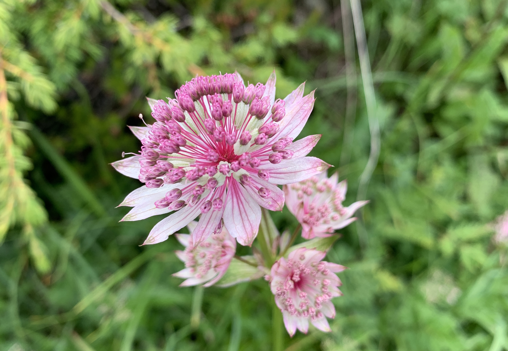
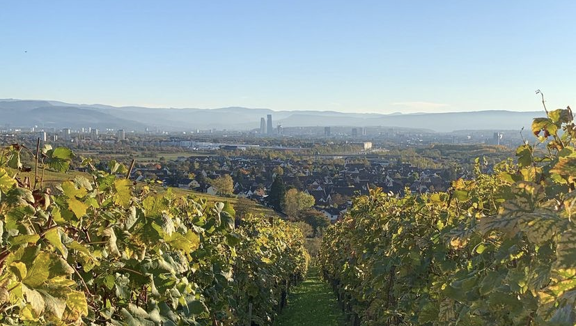
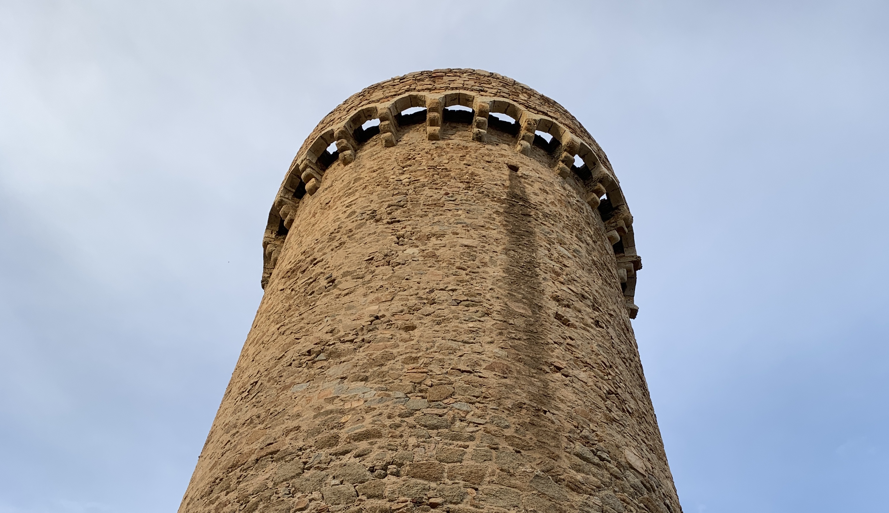

Pfingstrose
📠Reinach BL, Schweiz

Beeindruckende Wasserfälle
📠Lenk, Schweiz

Abendzeit in den Bergen
📠Lenk-Bühlberg, Schweiz

Sterndoldenblüten

📠Schynige Platte, Schweiz
In den Weinreben mit Blick auf Basel

📠Ötlingen, Deutschland
Zurück in die Antike

📠Tossa de Mar, Spanien